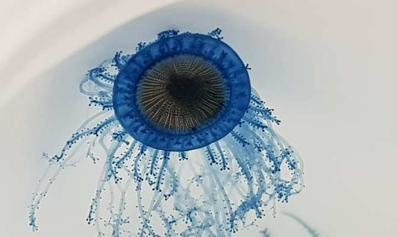
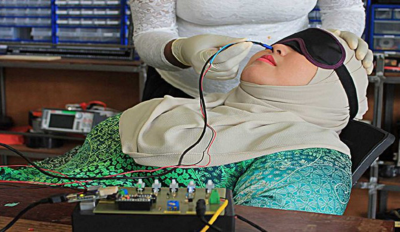
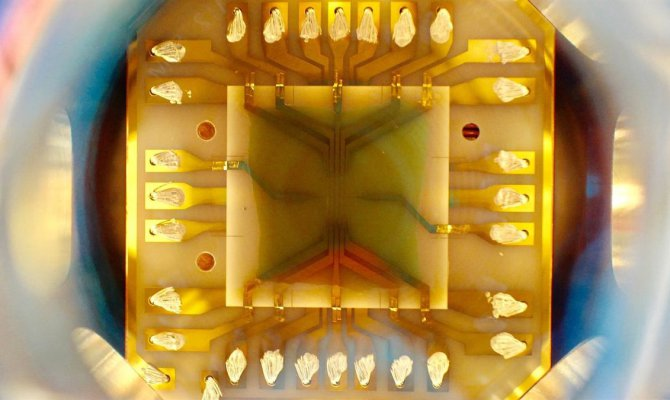
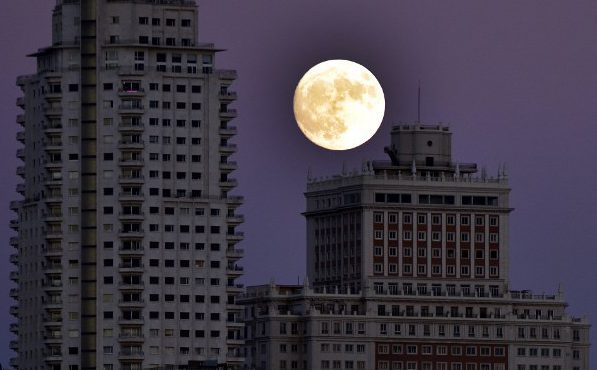
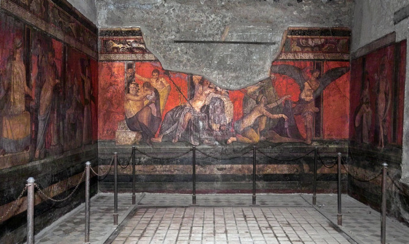
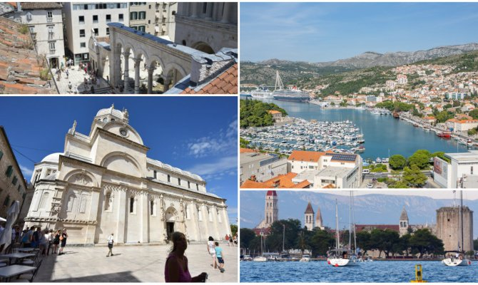
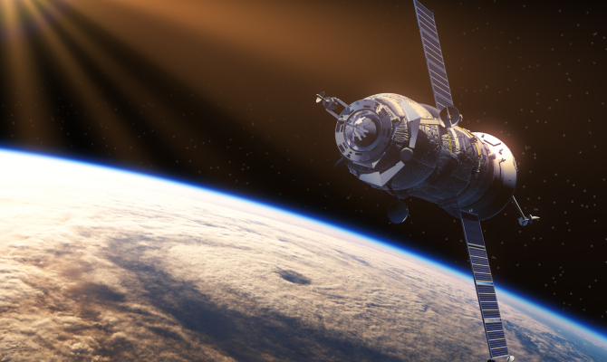
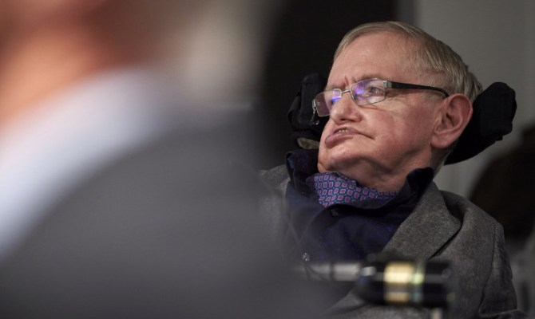
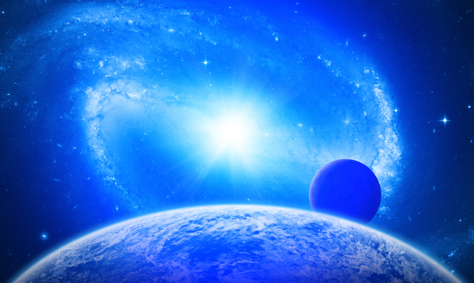
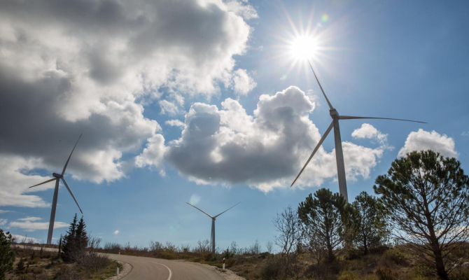

U Jadranu je pronađen neobični organizam poznat pod nazivom”plavo dugme”Usavršavanje ove ideje omogućilo bi korisnicima slanje mirisa preko internetaNAJHLADNIJA TOČKA U SVEMIRU: Zaledili atome na tik do apsolutne nule.Alternativa staroj, dosadnoj uličnoj rasvjeti, umjetni mjesec, osvjetljavat će dijelove jugoistočne Kine.Natpis na zidu u Pompejima sugerira da se erupcija zbila u listopadu.Katastrofa prijeti i Hrvatskoj, evo koje gradove će potopiti more ili uništiti erozija.Evo tri razloga zašto još uvijek nismo pronašli vanzemaljce.Pojavit će se rasa superljudi, dok će obični ljudi izumrijeti.Bit ćemo u svemiru za nekoliko tjedana, a ne mjeseci.Vjetroelektrane ipak nisu idealno rješenje.